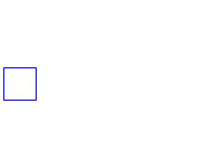
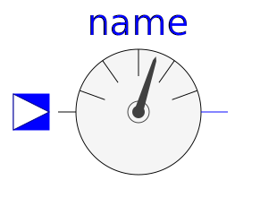

This package contains connectors and interfaces (partial models) for analog electrical components. The partial models contain typical combinations of pins, and internal variables which are often used. Furthermore, the thermal heat port is in this package which can be included by inheritance.
| Name | Description |
|---|---|
| Pin of an electrical component | |
| Positive pin of an electrical component | |
| Negative pin of an electrical component | |
| Component with two electrical pins | |
| Component with two electrical pins p and n and current i from p to n | |
| FourPin | Component with two pairs of each two electrical pins |
|  TwoPort | Component with two electrical ports, including current |
| Partial model to include a conditional HeatPort in order to describe the power loss via a thermal network | |
| PartialConditionalHeatPort | Partial model to include a conditional HeatPort in order to dissipate losses, used for graphical modeling, i.e., for building models by drag-and-drop |
|  AbsoluteSensor | Base class to measure the absolute value of a pin variable |
| Base class to measure a relative variable between two pins | |
| Interface for voltage sources | |
| Interface for current sources | |
| Ideal semiconductor | |
| Ideal electrical switch | |
| Ideal switch with simple arc model |
Copyright © 1998-2020, Modelica Association and contributors